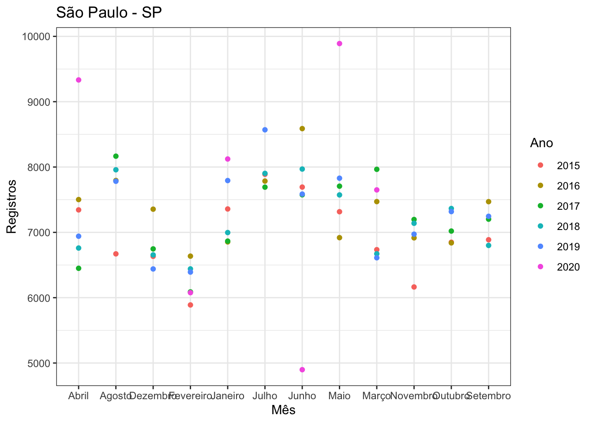
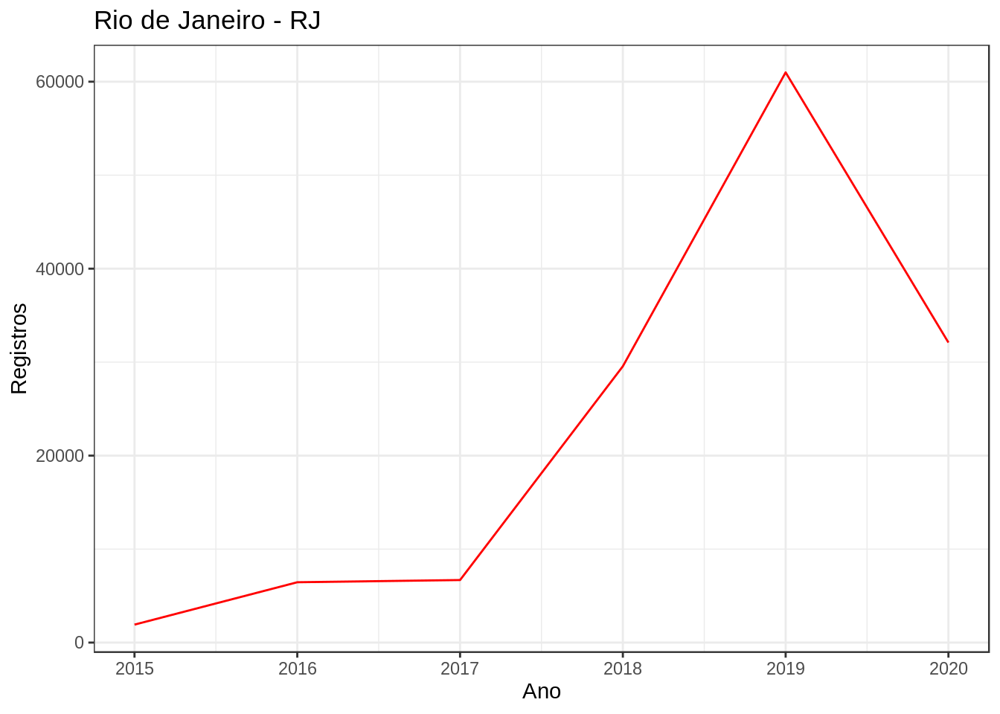
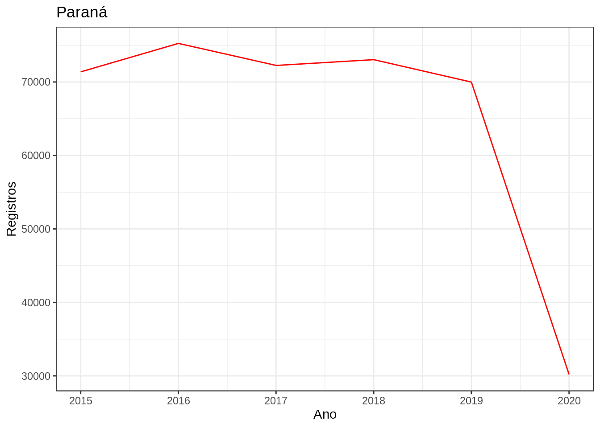
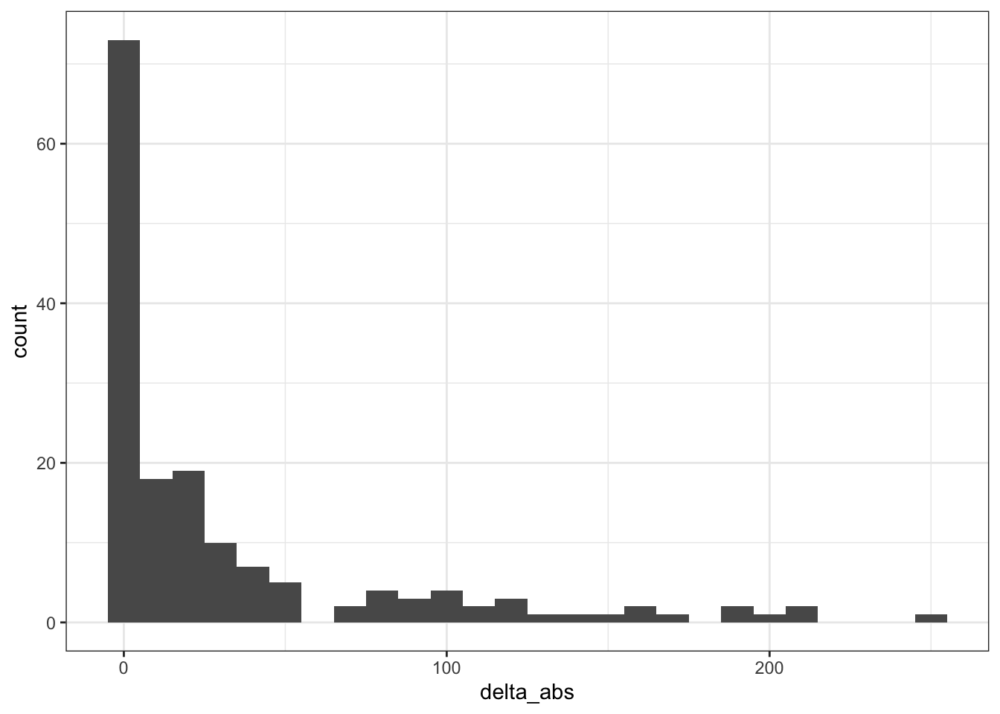
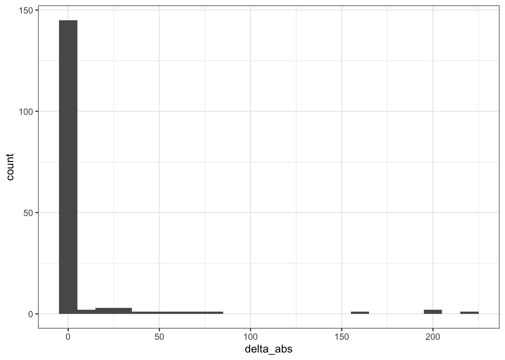

Base de dados de óbitos do Portal da Transparência do Registro Civil
Introdução
Base de dados obtida do portal da transparência do Registro Civil, de 2015 até junho de 2020.
Existe um atraso na alimentação do sistema que pode causar um atraso estimado em 15 dias.
Os dados estão em nível municipal e estadual, mês a mês. Faça o download aqui.
O código-fonte utilizado para obter os dados está disponível aqui.
IMPORTANTE: Antes de usar os dados, faça as verificações estatísticas e tratamentos necessários!
Tabelas disponíveis
- by_city_monthly : Certidões de óbito emitidas em cada cidade, mês a mês, de janeiro de 2015 até junho de 2020.
Corresponde a preencher os campos “Ano”, “Mês” e “Estado” no portal do Registro Civil. Ex.: 2019, Janeiro, Todas, São Paulo.
- by_city_yearly : Certidões de óbito emitidas em cada cidade, ano a ano, de 2015 até 2020.
Corresponde a preencher os campos “Ano” e “Estado” no portal do Registro Civil. Ex.: 2019, Todos, Todas, São Paulo.
- by_state_monthly : Certidões de óbito emitidas em cada estado brasileiro, mês a mês, de janeiro de 2015 até junho de 2020.
Corresponde a preencher os campos “Ano” e “Mês” no portal do Registro Civil. Ex.: 2019, Janeiro, Todas, Todos.
- by_state_yearly : Certidões de óbito emitidas em cada estado, ano a ano, de janeiro de 2015 até junho de 2020.
Amostras dos dados
Por cidade, mês a mês (tabela by_city_monthly)

Por cidade, ano a ano (tabela by_city_yearly)

Por estado, mês a mês (tabela by_state_monthly)

Por estado, ano a ano (tabela by_state_yearly)

Pré-análise dos dados
Nomes das cidades
Nomes das cidades com problemas de grafia na tabela by_cities_monthly
master_table <-
ibge_data %>%
mutate(key = squash_string(
make_place_key(
Nome_Município,
Nome_UF
)
))
problem_names_c <- by_city_monthly %>%
mutate(key = squash_string(make_place_key(Cidade, Estado))) %>%
mutate(exists = key %in% master_table$key) %>%
filter(exists == FALSE)
# Pull unique values
(problem_names_c %>% pull(key) %>% unique)## [1] "brazlandia - distrito federal" "ceilandia - distrito federal"
## [3] "gama - distrito federal" "guara - distrito federal"
## [5] "nucleo bandeirantes - distrito federal" "paranoa - distrito federal"
## [7] "planaltina - distrito federal" "samambaia - distrito federal"
## [9] "sobradinho - distrito federal" "taguatinga - distrito federal"
## [11] "senador la roque - maranhao" "governador edson lobao - maranhao"
## [13] "poxoreo - mato grosso" "sao thome das letras - minas gerais"
## [15] "brasopolis - minas gerais" "santarem - paraiba"
## [17] "lagoa do itaenga - pernambuco" "iguaraci - pernambuco"
## [19] "santana do livramento - rio grande do sul" "espigao do oeste - rondonia"
## [21] "biritiba-mirim - sao paulo" "sao valerio da natividade - tocantins"
## [23] "fortaleza do tabocao - tocantins" "parati - rio de janeiro"
## [25] "olhos d'agua - minas gerais" "sem peixe - minas gerais"
## [27] "amparo da serra - minas gerais" "florinia - sao paulo"
## [29] "serido - paraiba" "graccho cardoso - sergipe"
## [31] "arez - rio grande do norte" "couto de magalhaes - tocantins"
## [33] "eldorado dos carajas - para" "jequirica - bahia"
## [35] "santa isabel do para - para" "campo de santana - paraiba"Nomes das cidades com problemas de grafia na tabela by_cities_yearly
problem_names_cs <- by_city_yearly %>%
mutate(key = squash_string(make_place_key(Cidade, Estado))) %>%
mutate(exists = key %in% master_table$key) %>%
filter(exists == FALSE)
# Pull unique values
(problem_names_cs %>% pull(key) %>% unique)## [1] "brazlandia - distrito federal" "ceilandia - distrito federal"
## [3] "gama - distrito federal" "guara - distrito federal"
## [5] "nucleo bandeirantes - distrito federal" "paranoa - distrito federal"
## [7] "planaltina - distrito federal" "samambaia - distrito federal"
## [9] "sobradinho - distrito federal" "taguatinga - distrito federal"
## [11] "senador la roque - maranhao" "governador edson lobao - maranhao"
## [13] "poxoreo - mato grosso" "sao thome das letras - minas gerais"
## [15] "sem peixe - minas gerais" "olhos d'agua - minas gerais"
## [17] "brasopolis - minas gerais" "amparo da serra - minas gerais"
## [19] "santarem - paraiba" "lagoa do itaenga - pernambuco"
## [21] "iguaraci - pernambuco" "parati - rio de janeiro"
## [23] "santana do livramento - rio grande do sul" "espigao do oeste - rondonia"
## [25] "florinia - sao paulo" "biritiba-mirim - sao paulo"
## [27] "sao valerio da natividade - tocantins" "fortaleza do tabocao - tocantins"
## [29] "serido - paraiba" "arez - rio grande do norte"
## [31] "graccho cardoso - sergipe" "couto de magalhaes - tocantins"
## [33] "eldorado dos carajas - para" "jequirica - bahia"
## [35] "campo de santana - paraiba" "santa isabel do para - para"Todos os nomes das cidades com problemas de grafia
c(pull(problem_names_c, key), pull(problem_names_cs, key)) %>% unique## [1] "brazlandia - distrito federal" "ceilandia - distrito federal"
## [3] "gama - distrito federal" "guara - distrito federal"
## [5] "nucleo bandeirantes - distrito federal" "paranoa - distrito federal"
## [7] "planaltina - distrito federal" "samambaia - distrito federal"
## [9] "sobradinho - distrito federal" "taguatinga - distrito federal"
## [11] "senador la roque - maranhao" "governador edson lobao - maranhao"
## [13] "poxoreo - mato grosso" "sao thome das letras - minas gerais"
## [15] "brasopolis - minas gerais" "santarem - paraiba"
## [17] "lagoa do itaenga - pernambuco" "iguaraci - pernambuco"
## [19] "santana do livramento - rio grande do sul" "espigao do oeste - rondonia"
## [21] "biritiba-mirim - sao paulo" "sao valerio da natividade - tocantins"
## [23] "fortaleza do tabocao - tocantins" "parati - rio de janeiro"
## [25] "olhos d'agua - minas gerais" "sem peixe - minas gerais"
## [27] "amparo da serra - minas gerais" "florinia - sao paulo"
## [29] "serido - paraiba" "graccho cardoso - sergipe"
## [31] "arez - rio grande do norte" "couto de magalhaes - tocantins"
## [33] "eldorado dos carajas - para" "jequirica - bahia"
## [35] "santa isabel do para - para" "campo de santana - paraiba"list_df <- list(cities_table = by_city_monthly,
cities_summary_table = by_city_yearly,
states_table = by_state_monthly,
states_summary_table = by_state_yearly)
summary <- list_df %>%
map(. %>%
group_by(Ano, Estado) %>%
summarise(Registros = sum(Registros))
)
for (i in seq_along(summary)) {
summary[[i]]$table <- rep(names(summary[i]), nrow(summary[[i]]))
}
summary %>%
bind_rows %>%
pivot_wider(names_from = table, values_from = Registros)## # A tibble: 162 x 6
## # Groups: Ano [6]
## Ano Estado cities_table cities_summary_table states_table states_summary_table
## <dbl> <chr> <dbl> <dbl> <dbl> <dbl>
## 1 2015 Acre 2524 2524 2524 2524
## 2 2015 Alagoas 7369 7369 7000 7000
## 3 2015 Amapá 1978 1991 1989 1989
## 4 2015 Amazonas 2481 2656 2542 2542
## 5 2015 Bahia 29777 29777 28580 28580
## 6 2015 Ceará 8597 8597 8169 8169
## 7 2015 Distrito Federal 13854 13897 13897 13897
## 8 2015 Espírito Santo 22476 22555 22555 22555
## 9 2015 Goiás 22956 23143 23143 23143
## 10 2015 Maranhão 2033 2036 2036 2036
## # … with 152 more rowsSomas dos registros nas tabelas
Tabela by_city_monthly
(ca <- yearly_aggregate(by_city_monthly))## # A tibble: 6 x 2
## Ano Registros
## <dbl> <dbl>
## 1 2015 788531
## 2 2016 913829
## 3 2017 947620
## 4 2018 1078841
## 5 2019 1213073
## 6 2020 573725Tabela by_city_yearly
(csa <- yearly_aggregate(by_city_yearly))## # A tibble: 6 x 2
## Ano Registros
## <dbl> <dbl>
## 1 2015 789647
## 2 2016 914655
## 3 2017 948373
## 4 2018 1079757
## 5 2019 1213573
## 6 2020 574811Tabela by_state_monthly
(sa <- yearly_aggregate(by_state_monthly))## # A tibble: 6 x 2
## Ano Registros
## <dbl> <dbl>
## 1 2015 787300
## 2 2016 906479
## 3 2017 947069
## 4 2018 1075726
## 5 2019 1212326
## 6 2020 573560Tabela by_state_monthly
(ssa <- yearly_aggregate(by_state_yearly))## # A tibble: 6 x 2
## Ano Registros
## <dbl> <dbl>
## 1 2015 787300
## 2 2016 906479
## 3 2017 947069
## 4 2018 1075726
## 5 2019 1212326
## 6 2020 574811Comparação entre tabelas
bind_rows("cities" = ca,
"cities_summary" = csa,
"states" = sa,
"states_summary" = ssa,
.id = "origin_table") %>%
pivot_wider(names_from = origin_table, values_from = Registros)## # A tibble: 6 x 5
## Ano cities cities_summary states states_summary
## <dbl> <dbl> <dbl> <dbl> <dbl>
## 1 2015 788531 789647 787300 787300
## 2 2016 913829 914655 906479 906479
## 3 2017 947620 948373 947069 947069
## 4 2018 1078841 1079757 1075726 1075726
## 5 2019 1213073 1213573 1212326 1212326
## 6 2020 573725 574811 573560 574811Tabela by_city_monthly vs by_city_yearly
cma <- by_city_monthly %>%
group_by(Estado, Ano) %>%
summarise(Registros = sum(Registros))
cysa <- by_city_yearly %>%
select(Cidade, Estado, Ano, Registros) %>%
group_by(Estado, Ano) %>%
summarise(Registros = sum(Registros))
(combined_cities <-
bind_rows("cities" = cma, "cities_summary" = cysa, .id = "origin_table") %>%
pivot_wider(names_from = origin_table, values_from = Registros) %>%
mutate(delta_abs = abs(cities_summary - cities))
)## # A tibble: 162 x 5
## # Groups: Estado [27]
## Estado Ano cities cities_summary delta_abs
## <chr> <dbl> <dbl> <dbl> <dbl>
## 1 Acre 2015 2524 2524 0
## 2 Acre 2016 2486 2486 0
## 3 Acre 2017 3809 3809 0
## 4 Acre 2018 3909 3909 0
## 5 Acre 2019 3804 3804 0
## 6 Acre 2020 1998 2004 6
## 7 Alagoas 2015 7369 7369 0
## 8 Alagoas 2016 10997 10997 0
## 9 Alagoas 2017 11584 11584 0
## 10 Alagoas 2018 14131 14131 0
## # … with 152 more rowssummary(combined_cities)## Estado Ano cities cities_summary delta_abs
## Length:162 Min. :2015 Min. : 870 Min. : 870 Min. : 0.00
## Class :character 1st Qu.:2016 1st Qu.: 6680 1st Qu.: 6681 1st Qu.: 0.00
## Mode :character Median :2018 Median : 14518 Median : 14542 Median : 8.00
## Mean :2018 Mean : 34047 Mean : 34079 Mean : 32.88
## 3rd Qu.:2019 3rd Qu.: 32800 3rd Qu.: 32848 3rd Qu.: 36.00
## Max. :2020 Max. :311562 Max. :311570 Max. :249.00combined_cities %>%
filter(delta_abs != 0) %>%
arrange(-delta_abs)## # A tibble: 118 x 5
## # Groups: Estado [26]
## Estado Ano cities cities_summary delta_abs
## <chr> <dbl> <dbl> <dbl> <dbl>
## 1 Ceará 2016 26632 26881 249
## 2 Amapá 2018 2110 2324 214
## 3 Pará 2020 14294 14502 208
## 4 Ceará 2020 24356 24561 205
## 5 Paraíba 2015 17651 17843 192
## 6 Goiás 2015 22956 23143 187
## 7 Amazonas 2015 2481 2656 175
## 8 Paraíba 2016 21107 21270 163
## 9 Paraíba 2017 22488 22648 160
## 10 Rio Grande do Norte 2016 7802 7957 155
## # … with 108 more rowsggplot(combined_cities) + geom_histogram(aes(delta_abs), binwidth = 10)
Tabela by_state_monthly vs by_state_yearly
sma <- by_state_monthly %>%
group_by(Estado, Ano) %>%
summarise(Registros = sum(Registros))
sysa <- by_state_yearly %>%
select(Estado, Ano, Registros)
(combined_states <-
bind_rows("states" = sma, "states_summary" = sysa, .id = "origin_table") %>%
pivot_wider(names_from = origin_table, values_from = Registros) %>%
mutate(delta_abs = abs(states_summary - states))
)## # A tibble: 162 x 5
## # Groups: Estado [27]
## Estado Ano states states_summary delta_abs
## <chr> <dbl> <dbl> <dbl> <dbl>
## 1 Acre 2015 2524 2524 0
## 2 Acre 2016 2486 2486 0
## 3 Acre 2017 3809 3809 0
## 4 Acre 2018 3909 3909 0
## 5 Acre 2019 3804 3804 0
## 6 Acre 2020 1999 2004 5
## 7 Alagoas 2015 7000 7000 0
## 8 Alagoas 2016 10560 10560 0
## 9 Alagoas 2017 11092 11092 0
## 10 Alagoas 2018 13579 13579 0
## # … with 152 more rowssummary(combined_states)## Estado Ano states states_summary delta_abs
## Length:162 Min. :2015 Min. : 870 Min. : 870 Min. : 0.000
## Class :character 1st Qu.:2016 1st Qu.: 6681 1st Qu.: 6681 1st Qu.: 0.000
## Mode :character Median :2018 Median : 14518 Median : 14542 Median : 0.000
## Mean :2018 Mean : 33966 Mean : 33974 Mean : 7.722
## 3rd Qu.:2019 3rd Qu.: 32803 3rd Qu.: 32841 3rd Qu.: 0.000
## Max. :2020 Max. :311562 Max. :311562 Max. :216.000combined_states %>%
filter(delta_abs != 0) %>%
arrange(-delta_abs)## # A tibble: 22 x 5
## # Groups: Estado [22]
## Estado Ano states states_summary delta_abs
## <chr> <dbl> <dbl> <dbl> <dbl>
## 1 Bahia 2020 28335 28551 216
## 2 Pará 2020 14303 14502 199
## 3 Alagoas 2020 8688 8885 197
## 4 Ceará 2020 24396 24561 165
## 5 Minas Gerais 2020 54672 54751 79
## 6 Goiás 2020 14196 14264 68
## 7 Maranhão 2020 11400 11460 60
## 8 Pernambuco 2020 32863 32913 50
## 9 Rio Grande do Sul 2020 36936 36977 41
## 10 Rio Grande do Norte 2020 7197 7227 30
## # … with 12 more rowsggplot(combined_states) + geom_histogram(aes(delta_abs), binwidth = 10)